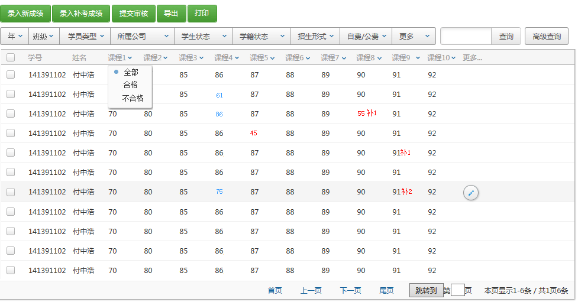
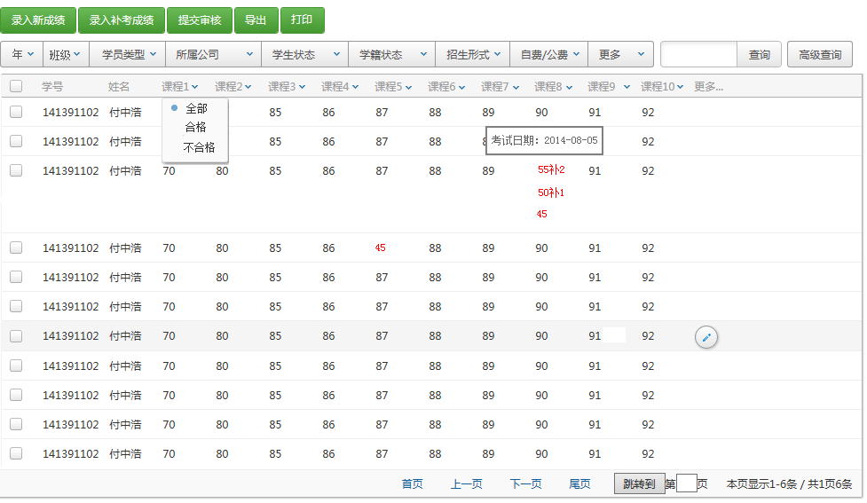
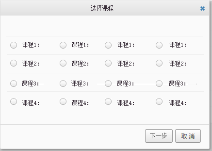
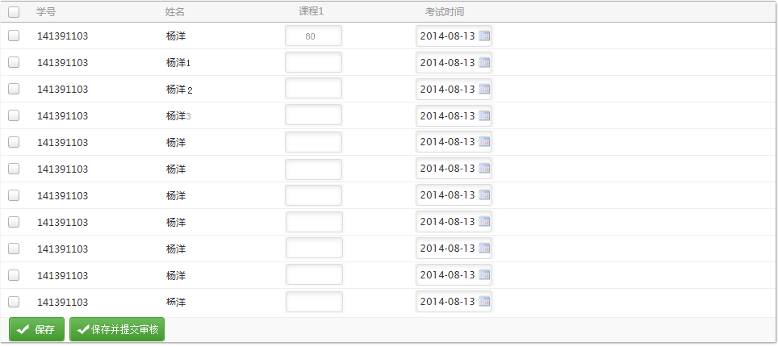
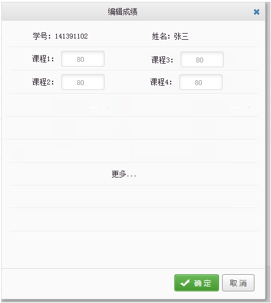
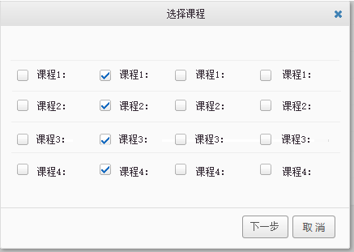
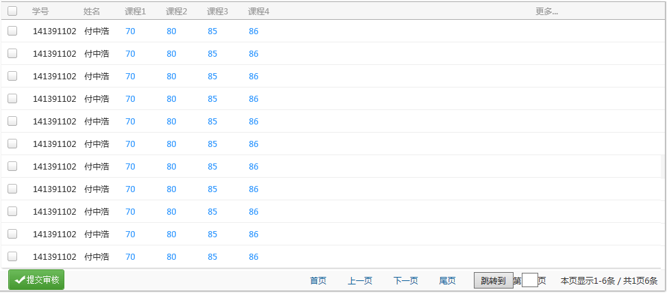

上面列表的成绩中有不合格的分数用红字显示 ，补考的成绩旁边显示补1（1代表补考1次）。本班的教员只能看本班的学生成绩。鼠标在分数上悬停可查看考试日期。
更多的下拉列表里面是：成绩历史（有补考成绩的学员，查看以往考试数据）、未提交审批、未审批、审批未通过、合格（所有已录入课程分数）、不合格（所有已录入课程分数）、全部（清楚条件显示所有数据）。
未提交审核分数变成浅蓝色
成绩历史列表如下图：

每门成绩均可按照合格、不合格 查询。导出到excel文件，打印：实现打印报表功能，利用iReport-5.0.0打印成绩。
成绩录入过程：1）选学生、2）选课、3）按照某一课程批量录入成绩。
1、选择学生，点录入新成绩或补考成绩按钮 打开选择课程的dialog窗口页，

2、下一步打开成绩录入页面

录入新成绩 ：判断有该课程的成绩了，只能录入补考成绩
录入补考成绩：录入补考成绩 判断成绩是否合格
批量录入单科成绩，可批量填充，如：第一行录入，下面的行填充第一行的值。
保存两种提示：1）保存 ；2）保存直接提交审核。 审核通过与审核不通过放入待办事项。
成绩管理用到的表：理论课程管理表（t_lesson）、成绩表包含：成绩表（t_score）、成绩历次表（t_historyscore）、成绩审核记录表（t_auditRecord）
成绩表存储最新的成绩，补考成绩录入时，将原成绩信息导入到成绩历次表。
成绩审核状态
0：未提交审核
1：审核通过
2：审核未通过
3：未审核
说明：未审核 最大，按照这个字段倒序读取数据，首先显示未审核的记录。
点列表中的对该行的信息编辑，如下图的页面dialog窗口。只显示未提交审核与未通过审核的课程。

点“提交审核”出现课程选择的列表dialog窗口如下图（可以同时选择一门或几门课程提交审核）：

下一步出现下图的页面
